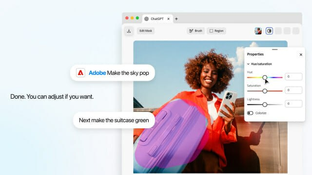

01 · KR
Logispot 물류 MCP
물류 데이터를 대화형 AI 업무 흐름에 연결하다
한국경제는 로지스팟이 ChatGPT·Claude와 연동되는 물류 MCP를 개발해 고객사의 AX를 지원한다고 보도했다. 운송 업무 데이터를 기존 물류 운영 흐름에서 AI가 다룰 수 있도록 연결하는 사례다.
원문 보기 ↗ADDIT INSIGHT
AI 도입의 실무 가치는 모델 교체보다 현업 데이터와 행동 도구를 연결하는 인터페이스에서 생긴다.
연결성은 빨라지고 있지만 데이터·권한·책임의 경계는 더 선명해야 합니다.
AI가 강해질수록 데이터·권한·검증·보안의 경계를 먼저 설계해야 합니다.
AI는 독립 도구에서 물류·금융·교육 플랫폼 안으로 들어온다.
연결성이 커질수록 터미널·파일·계정의 공격면도 넓어진다.
모델 성능보다 사람의 검토 지점과 책임선이 중요해진다.
AI 일자리와 인프라 논쟁이 비용·분배·현금흐름 문제로 이동한다.
에이전트는 문서·게임·주거·물류에서 구체적 결과를 내기 시작했다.
물류 데이터를 대화형 AI 업무 흐름에 연결하다
한국경제는 로지스팟이 ChatGPT·Claude와 연동되는 물류 MCP를 개발해 고객사의 AX를 지원한다고 보도했다. 운송 업무 데이터를 기존 물류 운영 흐름에서 AI가 다룰 수 있도록 연결하는 사례다.
원문 보기 ↗AI 도입의 실무 가치는 모델 교체보다 현업 데이터와 행동 도구를 연결하는 인터페이스에서 생긴다.
AI 구독료를 금융상품의 생활 혜택으로 번역하다
프레시안은 BNK부산은행이 챗GPT 구독료 10% 할인 혜택을 포함한 신상품 3종을 출시했다고 보도했다. 실적 조건 없는 기본형부터 생활비·AI 구독 특화형까지 소비 패턴별 혜택을 나눴다.
원문 보기 ↗AI가 일상 지출 항목이 될수록 서비스 자체보다 결제·구독 맥락을 설계하는 경쟁이 커진다.
학교가 여러 모델을 한 번에 쓰는 진입 장벽을 낮추다
울산종합일보는 울산과학대학교가 대학 제공 크레딧으로 ChatGPT·Claude·Gemini 등을 이용하는 생성형 AI 통합 플랫폼을 무료 지원한다고 보도했다. 특정 모델 하나가 아니라 여러 모델을 한 운영 환경에 묶은 방식이다.
원문 보기 ↗조직 확산의 첫 단계는 최고의 모델을 고르는 일보다 구성원이 안전하게 시험할 공통 접점을 만드는 일이다.
빠른 제작만큼 공개·보안 경계를 함께 점검하다
게임메카는 누구나 만들 수 있는 바이브 코딩 웹게임의 위험성을 다뤘다. 생성형 AI로 제작 속도가 빨라지는 만큼 코드 품질, 외부 공개, 악성 동작과 같은 운영 리스크도 함께 검토해야 한다는 사례다.
원문 보기 ↗AI로 만든 결과물을 배포할 때는 제작 완료가 아니라 검증·권한·업데이트 책임까지가 제품 범위다.

대화형 AI 안에서 이미지와 PDF 편집까지 이어 붙이다
ZDNet korea는 Adobe가 ChatGPT용 플러그인에 인터랙티브 편집 기능을 추가했다고 보도했다. Photoshop·Adobe Express·Acrobat 기술을 활용해 대화와 정밀 편집을 한 흐름으로 연결한다.
원문 보기 ↗생성형 AI의 다음 경쟁은 답변 품질뿐 아니라 사용자가 다음 행동을 끊김 없이 완료하는 제품 연결성이다.